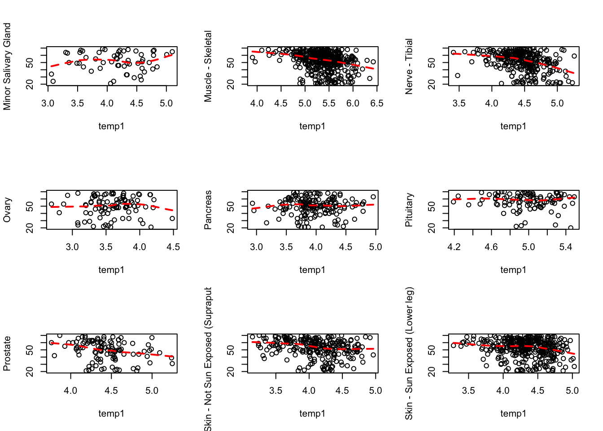
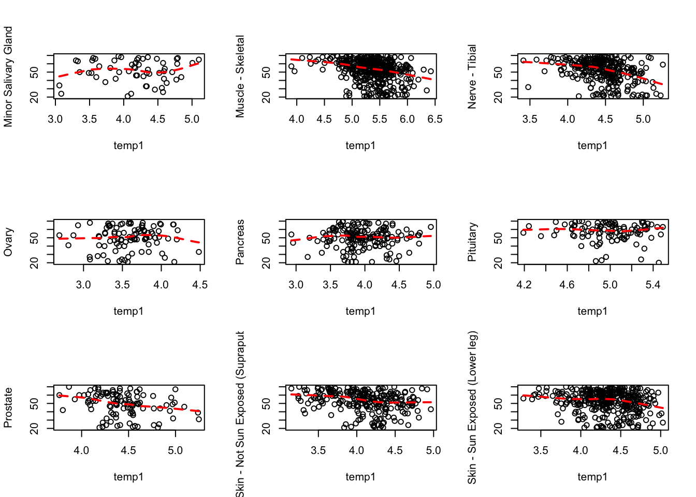

In this script, we check for the correlation structure between age as a continuous variable (in inches) and gene expression of the samples for the different tissues.
## Finished
## Pass returnall=TRUE to return lists of duplicate or missing query terms.
cbind.data.frame(out$name, out$summary)
## out$name
## 1 vesicle trafficking 1
## 2 mitochondrial ribosomal protein S35
## 3 WD repeat domain 3
## 4 DEAD-box helicase 1
## 5 dihydrolipoamide dehydrogenase
## 6 gamma-glutamyltransferase 1
## 7 inactive gamma-glutamyltranspeptidase 2-like
## 8 gamma-glutamyltransferase 2
## 9 tuftelin interacting protein 11
## 10 mitochondrial elongation factor 1
## 11 ubiquitin specific peptidase 14
## 12 G1 to S phase transition 1
## 13 CLK4 associating serine/arginine rich protein
## 14 BRCA1 associated ATM activator 1
## 15 twinkle mtDNA helicase
## 16 chromosome 12 open reading frame 49
## 17 isoprenylcysteine carboxyl methyltransferase
## 18 sorbin and SH3 domain containing 3
## 19 molybdenum cofactor synthesis 3
## 20 MAD2L1 binding protein
## 21 OPA3, outer mitochondrial membrane lipid metabolism regulator
## 22 MYC associated factor X
## 23 interferon regulatory factor 3
## 24 scaffold attachment factor B2
## 25 growth differentiation factor 15
## 26 AAR2 splicing factor homolog
## 27 proteasome activator subunit 3
## 28 tripartite motif containing 22
## 29 UTP3, small subunit processome component
## 30 integrin subunit beta 4
## 31 damage specific DNA binding protein 2
## 32 <NA>
## 33 G3BP stress granule assembly factor 2
## 34 clathrin heavy chain
## 35 AFG3 like matrix AAA peptidase subunit 2
## 36 TOR signaling pathway regulator
## 37 T-box 19
## 38 splicing factor 3b subunit 4
## 39 RNA polymerase II subunit D
## 40 ribosomal protein L7 like 1
## 41 cyclin dependent kinase inhibitor 2A
## 42 dihydrolipoamide S-acetyltransferase
## 43 family with sequence similarity 168 member B
## 44 sphingomyelin phosphodiesterase 4, neutral membrane (neutral sphingomyelinase-3) pseudogene
## 45 transcription factor 7 like 1
## 46 transforming growth factor beta regulator 1
## 47 translocase of outer mitochondrial membrane 70
## 48 F-box and leucine rich repeat protein 18
## 49 carnitine palmitoyltransferase 2
## 50 cystatin B
## 51 parathyroid hormone 1 receptor
## 52 ferredoxin reductase
## 53 cytochrome c oxidase assembly factor 7 (putative)
## 54 ankyrin repeat domain 23
## 55 sprouty RTK signaling antagonist 1
## 56 HPS6, biogenesis of lysosomal organelles complex 2 subunit 3
## 57 dynactin subunit 5
## 58 TSR1, ribosome maturation factor
## 59 von Willebrand factor C and EGF domains
## 60 ubiquinol-cytochrome c reductase, Rieske iron-sulfur polypeptide 1
## 61 cleavage and polyadenylation factor I subunit 1
## 62 zinc finger matrin-type 3
## 63 proteasome 26S subunit, non-ATPase 1
## 64 tRNA methyltransferase 10C, mitochondrial RNase P subunit
## 65 nuclear protein 1, transcriptional regulator
## 66 WD repeat and SOCS box containing 2
## 67 dipeptidyl peptidase 7
## 68 p53-induced death domain protein 1
## 69 zinc finger protein 518B
## 70 poly(ADP-ribose) polymerase family member 10
## 71 tripartite motif containing 73
## 72 CDC like kinase 3
## 73 selenophosphate synthetase 2
## 74 TSPY like 5
## 75 high mobility group nucleosomal binding domain 4
## 76 ribosomal protein S27 like
## 77 calcineurin like EF-hand protein 1
## 78 retrotransposon Gag like 6
## 79 vitamin K epoxide reductase complex subunit 1 like 1
## 80 integrin subunit beta like 1
## 81 chromosome alignment maintaining phosphoprotein 1
## 82 chromosome 6 open reading frame 47
## 83 lecithin-cholesterol acyltransferase
## 84 FAST kinase domains 5
## 85 <NA>
## 86 <NA>
## 87 <NA>
## 88 <NA>
## 89 <NA>
## 90 <NA>
## 91 <NA>
## 92 <NA>
## 93 <NA>
## 94 <NA>
## 95 <NA>
## 96 <NA>
## 97 <NA>
## 98 <NA>
## out$summary
## 1 C6ORF55 encodes a protein involved in trafficking of the multivesicular body, an endosomal compartment involved in sorting membrane proteins for degradation in lysosomes (Ward et al., 2005 [PubMed 15644320]).
## 2 Mammalian mitochondrial ribosomal proteins are encoded by nuclear genes and help in protein synthesis within the mitochondrion. Mitochondrial ribosomes (mitoribosomes) consist of a small 28S subunit and a large 39S subunit. They have an estimated 75% protein to rRNA composition compared to prokaryotic ribosomes, where this ratio is reversed. Another difference between mammalian mitoribosomes and prokaryotic ribosomes is that the latter contain a 5S rRNA. Among different species, the proteins comprising the mitoribosome differ greatly in sequence, and sometimes in biochemical properties, which prevents easy recognition by sequence homology. This gene encodes a 28S subunit protein that has had confusing nomenclature in the literature. Alternatively spliced transcript variants encoding different isoforms have been found for this gene. Pseudogenes corresponding to this gene are found on chromosomes 3p, 5q, and 10q.
## 3 This gene encodes a nuclear protein containing 10 WD repeats. WD repeats are approximately 30- to 40-amino acid domains containing several conserved residues, which usually include a trp-asp at the C-terminal end. Proteins belonging to the WD repeat family are involved in a variety of cellular processes, including cell cycle progression, signal transduction, apoptosis, and gene regulation.
## 4 DEAD box proteins, characterized by the conserved motif Asp-Glu-Ala-Asp (DEAD), are putative RNA helicases. They are implicated in a number of cellular processes involving alteration of RNA secondary structure such as translation initiation, nuclear and mitochondrial splicing, and ribosome and spliceosome assembly. Based on their distribution patterns, some members of this family are believed to be involved in embryogenesis, spermatogenesis, and cellular growth and division. This gene encodes a DEAD box protein of unknown function. It shows high transcription levels in 2 retinoblastoma cell lines and in tissues of neuroectodermal origin.
## 5 This gene encodes a member of the class-I pyridine nucleotide-disulfide oxidoreductase family. The encoded protein has been identified as a moonlighting protein based on its ability to perform mechanistically distinct functions. In homodimeric form, the encoded protein functions as a dehydrogenase and is found in several multi-enzyme complexes that regulate energy metabolism. However, as a monomer, this protein can function as a protease. Mutations in this gene have been identified in patients with E3-deficient maple syrup urine disease and lipoamide dehydrogenase deficiency. Alternative splicing results in multiple transcript variants.
## 6 The enzyme encoded by this gene is a type I gamma-glutamyltransferase that catalyzes the transfer of the glutamyl moiety of glutathione to a variety of amino acids and dipeptide acceptors. The enzyme is composed of a heavy chain and a light chain, which are derived from a single precursor protein. It is expressed in tissues involved in absorption and secretion and may contribute to the etiology of diabetes and other metabolic disorders. Multiple alternatively spliced variants have been identified. There are a number of related genes present on chromosomes 20 and 22, and putative pseudogenes for this gene on chromosomes 2, 13, and 22.
## 7 <NA>
## 8 GGT2 belongs to the gamma-glutamyltransferase (GGT; EC 2.3.2.2) gene family. GGT is a membrane-bound extracellular enzyme that cleaves gamma-glutamyl peptide bonds in glutathione and other peptides and transfers the gamma-glutamyl moiety to acceptors. GGT is also key to glutathione homeostasis because it provides substrates for glutathione synthesis (Heisterkamp et al., 2008 [PubMed 18357469]).
## 9 This gene encodes a protein component of the spliceosome that promotes the release of the lariat-intron during late-stage splicing through the recruitment of a pre-mRNA splicing factor called DEAH-box helicase 15. The encoded protein contains a G-patch domain, a hallmark of RNA-processing proteins, that binds DEAH-box helicase 15. This protein contains an atypical nuclear localization sequence as well as a nuclear speckle-targeting sequence, enabling it to localize to distinct speckled regions within the cell nucleus. Polymorphisms in this gene are associated with dental caries suggesting a role in amelogenesis. Alternative splicing results in multiple transcript variants.
## 10 <NA>
## 11 This gene encodes a member of the ubiquitin-specific processing (UBP) family of proteases that is a deubiquitinating enzyme (DUB) with His and Cys domains. This protein is located in the cytoplasm and cleaves the ubiquitin moiety from ubiquitin-fused precursors and ubiquitinylated proteins. Mice with a mutation that results in reduced expression of the ortholog of this protein are retarded for growth, develop severe tremors by 2 to 3 weeks of age followed by hindlimb paralysis and death by 6 to 10 weeks of age. Alternate transcriptional splice variants, encoding different isoforms, have been characterized.
## 12 <NA>
## 13 <NA>
## 14 The protein encoded by this ubiquitously expressed gene interacts with the tumor suppressing BRCA1 (breast cancer 1) protein and and the ATM (ataxia telangiectasia mutated) protein. ATM is thought to be a master controller of cell cycle checkpoint signalling pathways that are required for cellular responses to DNA damage such as double-strand breaks that are induced by ionizing radiation and complexes with BRCA1 in the multi-protein complex BASC (BRAC1-associated genome surveillance complex). The protein encoded by this gene is thought to play a role in the DNA damage pathway regulated by BRCA1 and ATM.
## 15 This gene encodes a hexameric DNA helicase which unwinds short stretches of double-stranded DNA in the 5' to 3' direction and, along with mitochondrial single-stranded DNA binding protein and mtDNA polymerase gamma, is thought to play a key role in mtDNA replication. The protein localizes to the mitochondrial matrix and mitochondrial nucleoids. Mutations in this gene cause infantile onset spinocerebellar ataxia (IOSCA) and progressive external ophthalmoplegia (PEO) and are also associated with several mitochondrial depletion syndromes. Alternative splicing results in multiple transcript variants encoding distinct isoforms.
## 16 <NA>
## 17 This gene encodes the third of three enzymes that posttranslationally modify isoprenylated C-terminal cysteine residues in certain proteins and target those proteins to the cell membrane. This enzyme localizes to the endoplasmic reticulum. Alternative splicing may result in other transcript variants, but the biological validity of those transcripts has not been determined.
## 18 This gene encodes an SH3 domain-containing adaptor protein. The presence of SH3 domains play a role in this protein's ability to bind other cytoplasmic molecules and contribute to cystoskeletal organization, cell adhesion and migration, signaling, and gene expression. Multiple transcript variants encoding different isoforms have been found for this gene.
## 19 Molybdenum cofactor (MoCo) is necessary for the function of all molybdoenzymes. The protein encoded by this gene adenylates and activates molybdopterin synthase, an enzyme required for biosynthesis of MoCo. This gene contains no introns. A pseudogene of this gene is present on chromosome 14.
## 20 The protein encoded by this gene was identified as a binding protein of the MAD2 mitotic arrest deficient-like 1 (MAD2/MAD2L1). MAD2 is a key component of the spindle checkpoint that delays the onset of anaphase until all the kinetochores are attached to the spindle. This protein may interact with the spindle checkpoint and coordinate cell cycle events in late mitosis. Alternatively spliced transcript variants encoding distinct isoforms have been observed.
## 21 The mouse ortholog of this protein co-purifies with the mitochondrial inner membrane. Mutations in this gene have been shown to result in 3-methylglutaconic aciduria type III and autosomal dominant optic atrophy and cataract. Multiple transcript variants encoding different isoforms have been found for this gene.
## 22 The protein encoded by this gene is a member of the basic helix-loop-helix leucine zipper (bHLHZ) family of transcription factors. It is able to form homodimers and heterodimers with other family members, which include Mad, Mxi1 and Myc. Myc is an oncoprotein implicated in cell proliferation, differentiation and apoptosis. The homodimers and heterodimers compete for a common DNA target site (the E box) and rearrangement among these dimer forms provides a complex system of transcriptional regulation. Mutations of this gene have been reported to be associated with hereditary pheochromocytoma. A pseudogene of this gene is located on the long arm of chromosome 7. Alternative splicing results in multiple transcript variants.
## 23 This gene encodes a member of the interferon regulatory transcription factor (IRF) family. The encoded protein is found in an inactive cytoplasmic form that upon serine/threonine phosphorylation forms a complex with CREBBP. This complex translocates to the nucleus and activates the transcription of interferons alpha and beta, as well as other interferon-induced genes. Alternatively spliced transcript variants encoding multiple isoforms have been observed for this gene.
## 24 The protein encoded by this gene, along with its paralog (scaffold attachment factor B1), is a repressor of estrogen receptor alpha. The encoded protein binds scaffold/matrix attachment region (S/MAR) DNA and is involved in cell cycle regulation, apoptosis, differentiation, the stress response, and regulation of immune genes.
## 25 This gene encodes a secreted ligand of the TGF-beta (transforming growth factor-beta) superfamily of proteins. Ligands of this family bind various TGF-beta receptors leading to recruitment and activation of SMAD family transcription factors that regulate gene expression. The encoded preproprotein is proteolytically processed to generate each subunit of the disulfide-linked homodimer. The protein is expressed in a broad range of cell types, acts as a pleiotropic cytokine and is involved in the stress response program of cells after cellular injury. Increased protein levels are associated with disease states such as tissue hypoxia, inflammation, acute injury and oxidative stress.
## 26 This gene encodes the homolog of the yeast A1-alpha2 repressin protein that is involved in mRNA splicing. Alternately spliced transcript variants have been found for this gene.
## 27 The 26S proteasome is a multicatalytic proteinase complex with a highly ordered structure composed of 2 complexes, a 20S core and a 19S regulator. The 20S core is composed of 4 rings of 28 non-identical subunits; 2 rings are composed of 7 alpha subunits and 2 rings are composed of 7 beta subunits. The 19S regulator is composed of a base, which contains 6 ATPase subunits and 2 non-ATPase subunits, and a lid, which contains up to 10 non-ATPase subunits. Proteasomes are distributed throughout eukaryotic cells at a high concentration and cleave peptides in an ATP/ubiquitin-dependent process in a non-lysosomal pathway. An essential function of a modified proteasome, the immunoproteasome, is the processing of class I MHC peptides. The immunoproteasome contains an alternate regulator, referred to as the 11S regulator or PA28, that replaces the 19S regulator. Three subunits (alpha, beta and gamma) of the 11S regulator have been identified. This gene encodes the gamma subunit of the 11S regulator. Six gamma subunits combine to form a homohexameric ring. Alternate splicing results in multiple transcript variants.
## 28 The protein encoded by this gene is a member of the tripartite motif (TRIM) family. The TRIM motif includes three zinc-binding domains, a RING, a B-box type 1 and a B-box type 2, and a coiled-coil region. This protein localizes to the cytoplasm and its expression is induced by interferon. The protein down-regulates transcription from the HIV-1 LTR promoter region, suggesting that function of this protein may be to mediate interferon's antiviral effects. Alternative splicing results in multiple transcript variants.
## 29 <NA>
## 30 Integrins are heterodimers comprised of alpha and beta subunits, that are noncovalently associated transmembrane glycoprotein receptors. Different combinations of alpha and beta polypeptides form complexes that vary in their ligand-binding specificities. Integrins mediate cell-matrix or cell-cell adhesion, and transduced signals that regulate gene expression and cell growth. This gene encodes the integrin beta 4 subunit, a receptor for the laminins. This subunit tends to associate with alpha 6 subunit and is likely to play a pivotal role in the biology of invasive carcinoma. Mutations in this gene are associated with epidermolysis bullosa with pyloric atresia. Multiple alternatively spliced transcript variants encoding distinct isoforms have been found for this gene.
## 31 This gene encodes a protein that is necessary for the repair of ultraviolet light-damaged DNA. This protein is the smaller subunit of a heterodimeric protein complex that participates in nucleotide excision repair, and this complex mediates the ubiquitylation of histones H3 and H4, which facilitates the cellular response to DNA damage. This subunit appears to be required for DNA binding. Mutations in this gene cause xeroderma pigmentosum complementation group E, a recessive disease that is characterized by an increased sensitivity to UV light and a high predisposition for skin cancer development, in some cases accompanied by neurological abnormalities. Two transcript variants encoding different isoforms have been found for this gene.
## 32 <NA>
## 33 <NA>
## 34 Clathrin is a major protein component of the cytoplasmic face of intracellular organelles, called coated vesicles and coated pits. These specialized organelles are involved in the intracellular trafficking of receptors and endocytosis of a variety of macromolecules. The basic subunit of the clathrin coat is composed of three heavy chains and three light chains.
## 35 This gene encodes a protein localized in mitochondria and closely related to paraplegin. The paraplegin gene is responsible for an autosomal recessive form of hereditary spastic paraplegia. This gene is a candidate gene for other hereditary spastic paraplegias or neurodegenerative disorders.
## 36 TIPRL is an inhibitory regulator of protein phosphatase-2A (PP2A) (see PPP2CA; MIM 176915), PP4 (see PPP4C; MIM 602035), and PP6 (see PPP6C; MIM 612725) (McConnell et al., 2007 [PubMed 17384681]).
## 37 This gene is a member of a phylogenetically conserved family of genes that share a common DNA-binding domain, the T-box. T-box genes encode transcription factors involved in the regulation of developmental processes. Mutations in this gene were found in patients with isolated deficiency of pituitary POMC-derived ACTH, suggesting an essential role for this gene in differentiation of the pituitary POMC lineage. ACTH deficiency is characterized by adrenal insufficiency symptoms such as weight loss, lack of appetite (anorexia), weakness, nausea, vomiting, and low blood pressure.
## 38 This gene encodes one of four subunits of the splicing factor 3B. The protein encoded by this gene cross-links to a region in the pre-mRNA immediately upstream of the branchpoint sequence in pre-mRNA in the prespliceosomal complex A. It also may be involved in the assembly of the B, C and E spliceosomal complexes. In addition to RNA-binding activity, this protein interacts directly and highly specifically with subunit 2 of the splicing factor 3B. This protein contains two N-terminal RNA-recognition motifs (RRMs), consistent with the observation that it binds directly to pre-mRNA.
## 39 This gene encodes the fourth largest subunit of RNA polymerase II, the polymerase responsible for synthesizing messenger RNA in eukaryotes. In yeast, this polymerase subunit is associated with the polymerase under suboptimal growth conditions and may have a stress protective role. A sequence for a ribosomal pseudogene is contained within the 3' untranslated region of the transcript from this gene.
## 40 <NA>
## 41 This gene generates several transcript variants which differ in their first exons. At least three alternatively spliced variants encoding distinct proteins have been reported, two of which encode structurally related isoforms known to function as inhibitors of CDK4 kinase. The remaining transcript includes an alternate first exon located 20 Kb upstream of the remainder of the gene; this transcript contains an alternate open reading frame (ARF) that specifies a protein which is structurally unrelated to the products of the other variants. This ARF product functions as a stabilizer of the tumor suppressor protein p53 as it can interact with, and sequester, the E3 ubiquitin-protein ligase MDM2, a protein responsible for the degradation of p53. In spite of the structural and functional differences, the CDK inhibitor isoforms and the ARF product encoded by this gene, through the regulatory roles of CDK4 and p53 in cell cycle G1 progression, share a common functionality in cell cycle G1 control. This gene is frequently mutated or deleted in a wide variety of tumors, and is known to be an important tumor suppressor gene.
## 42 This gene encodes component E2 of the multi-enzyme pyruvate dehydrogenase complex (PDC). PDC resides in the inner mitochondrial membrane and catalyzes the conversion of pyruvate to acetyl coenzyme A. The protein product of this gene, dihydrolipoamide acetyltransferase, accepts acetyl groups formed by the oxidative decarboxylation of pyruvate and transfers them to coenzyme A. Dihydrolipoamide acetyltransferase is the antigen for antimitochondrial antibodies. These autoantibodies are present in nearly 95% of patients with the autoimmune liver disease primary biliary cirrhosis (PBC). In PBC, activated T lymphocytes attack and destroy epithelial cells in the bile duct where this protein is abnormally distributed and overexpressed. PBC enventually leads to cirrhosis and liver failure. Mutations in this gene are also a cause of pyruvate dehydrogenase E2 deficiency which causes primary lactic acidosis in infancy and early childhood.
## 43 <NA>
## 44 <NA>
## 45 This gene encodes a member of the T cell factor/lymphoid enhancer factor family of transcription factors. These transcription factors are activated by beta catenin, mediate the Wnt signaling pathway and are antagonized by the transforming growth factor beta signaling pathway. The encoded protein contains a high mobility group-box DNA binding domain and participates in the regulation of cell cycle genes and cellular senescence.
## 46 <NA>
## 47 This gene encodes an import receptor of the outer mitochondrial membrane that is part of the translocase of the outer membrane complex. This protein is involved in the import of mitochondrial precursor proteins.
## 48 The protein encoded by this gene is a member of a family of proteins that contain an approximately 40-amino acid F-box motif. This motif is important for interaction with SKP1 and for targeting some proteins for degradation. The encoded protein has been shown to control the cellular level of FBXL7, a protein that induces mitotic arrest, by targeting it for polyubiquitylation and proteasomal degradation. Members of the F-box protein family, such as FBXL18, are characterized by an approximately 40-amino acid F-box motif. F-box proteins interact with SKP1 through the F box, and they interact with ubiquitination targets through other protein interaction domains.
## 49 The protein encoded by this gene is a nuclear protein which is transported to the mitochondrial inner membrane. Together with carnitine palmitoyltransferase I, the encoded protein oxidizes long-chain fatty acids in the mitochondria. Defects in this gene are associated with mitochondrial long-chain fatty-acid (LCFA) oxidation disorders.
## 50 The cystatin superfamily encompasses proteins that contain multiple cystatin-like sequences. Some of the members are active cysteine protease inhibitors, while others have lost or perhaps never acquired this inhibitory activity. There are three inhibitory families in the superfamily, including the type 1 cystatins (stefins), type 2 cystatins and kininogens. This gene encodes a stefin that functions as an intracellular thiol protease inhibitor. The protein is able to form a dimer stabilized by noncovalent forces, inhibiting papain and cathepsins l, h and b. The protein is thought to play a role in protecting against the proteases leaking from lysosomes. Evidence indicates that mutations in this gene are responsible for the primary defects in patients with progressive myoclonic epilepsy (EPM1). One type of mutation responsible for EPM1 is the expansion in the promoter region of this gene of a CCCCGCCCCGCG repeat from 2-3 copies to 30-78 copies.
## 51 The protein encoded by this gene is a member of the G-protein coupled receptor family 2. This protein is a receptor for parathyroid hormone (PTH) and for parathyroid hormone-like hormone (PTHLH). The activity of this receptor is mediated by G proteins which activate adenylyl cyclase and also a phosphatidylinositol-calcium second messenger system. Defects in this receptor are known to be the cause of Jansen's metaphyseal chondrodysplasia (JMC), chondrodysplasia Blomstrand type (BOCD), as well as enchodromatosis. Two transcript variants encoding the same protein have been found for this gene.
## 52 This gene encodes a mitochondrial flavoprotein that initiates electron transport for cytochromes P450 receiving electrons from NADPH. Multiple alternatively spliced transcript variants have been found for this gene.
## 53 <NA>
## 54 This gene is a member of the muscle ankyrin repeat protein (MARP) family and encodes a protein with four tandem ankyrin-like repeats. The protein is localized to the nucleus, functioning as a transcriptional regulator. Expression of this protein is induced during recovery following starvation.
## 55 <NA>
## 56 This intronless gene encodes a protein that may play a role in organelle biogenesis associated with melanosomes, platelet dense granules, and lysosomes. This protein interacts with Hermansky-Pudlak syndrome 5 protein. Mutations in this gene are associated with Hermansky-Pudlak syndrome type 6.
## 57 This gene encodes a subunit of dynactin, a component of the cytoplasmic dynein motor machinery involved in minus-end-directed transport. The encoded protein is a component of the pointed-end subcomplex and is thought to bind membranous cargo. A pseudogene of this gene is located on the long arm of chromosome 1. Alternatively spliced transcript variants encoding multiple isoforms have been observed for this gene.
## 58 <NA>
## 59 <NA>
## 60 <NA>
## 61 This gene encodes a member of the Clp1 family. The encoded protein is a multifunctional kinase which is a component of the tRNA splicing endonuclease complex and a component of the pre-mRNA cleavage complex II. This protein is implicated in tRNA, mRNA, and siRNA maturation. Mutations in this gene are associated with pontocerebellar hypoplasia type 10 (PCH10). Alternatively splice transcript variants encoding different isoforms have been found for this gene.
## 62 This gene encodes a protein containing three zinc finger domains and a nuclear localization signal. The mRNA and the protein of this gene are upregulated by wildtype p53 and overexpression of this gene inhibits tumor cell growth, suggesting that this gene may have a role in the p53-dependent growth regulatory pathway. Alternative splicing of this gene results in two transcript variants encoding two isoforms differing in only one amino acid.
## 63 The 26S proteasome is a multicatalytic proteinase complex with a highly ordered structure composed of 2 complexes, a 20S core and a 19S regulator. The 20S core is composed of 4 rings of 28 non-identical subunits; 2 rings are composed of 7 alpha subunits and 2 rings are composed of 7 beta subunits. The 19S regulator is composed of a base, which contains 6 ATPase subunits and 2 non-ATPase subunits, and a lid, which contains up to 10 non-ATPase subunits. Proteasomes are distributed throughout eukaryotic cells at a high concentration and cleave peptides in an ATP/ubiquitin-dependent process in a non-lysosomal pathway. An essential function of a modified proteasome, the immunoproteasome, is the processing of class I MHC peptides. This gene encodes the largest non-ATPase subunit of the 19S regulator lid, which is responsible for substrate recognition and binding. Alternatively spliced transcript variants have been found for this gene.
## 64 This gene encodes the precursor of a subunit of the mitochondrial ribonuclease P, which is involved in 5' processing of mitochondrial tRNAs. The encoded protein may confer RNA-binding capacity to mitochondrial ribonuclease P and may be essential for transcript processing, RNA modification, translation and mitochondrial respiration.
## 65 <NA>
## 66 This gene encodes a member of the WD-protein subfamily. The encoded protein contains five WD-repeats spanning most of the protein and an SOCS box in the C-terminus. The SOCS box may act as a bridge between specific substrate-binding domains and E3 ubiquitin protein ligases. Three transcript variants encoding different isoforms have been found for this gene.
## 67 The protein encoded by this gene is a post-proline cleaving aminopeptidase expressed in quiescent lymphocytes. The resting lymphocytes are maintained through suppression of apoptosis, a state which is disrupted by inhibition of this novel serine protease. The enzyme has strong sequence homology with prolylcarboxypeptidase and is active at both acidic and neutral pH.
## 68 The protein encoded by this gene contains a leucine-rich repeat and a death domain. This protein has been shown to interact with other death domain proteins, such as Fas (TNFRSF6)-associated via death domain (FADD) and MAP-kinase activating death domain-containing protein (MADD), and thus may function as an adaptor protein in cell death-related signaling processes. The expression of the mouse counterpart of this gene has been found to be positively regulated by the tumor suppressor p53 and to induce cell apoptosis in response to DNA damage, which suggests a role for this gene as an effector of p53-dependent apoptosis. Alternative splicing results in multiple transcript variants.
## 69 <NA>
## 70 Poly(ADP-ribose) polymerases (PARPs), such as PARP10, regulate gene transcription by altering chromatin organization by adding ADP-ribose to histones. PARPs can also function as transcriptional cofactors (Yu et al., 2005 [PubMed 15674325]).
## 71 <NA>
## 72 This gene encodes a protein belonging to the serine/threonine type protein kinase family. This protein is a nuclear dual-specificity kinase that regulates the intranuclear distribution of the serine/arginine-rich (SR) family of splicing factors. Two transcript variants encoding different isoforms have been found for this gene. Related pseudogenes are located on chromosomes 1 and 9.
## 73 This gene encodes an enzyme that catalyzes the production of monoselenophosphate (MSP) from selenide and ATP. MSP is the selenium donor required for synthesis of selenocysteine (Sec), which is co-translationally incorporated into selenoproteins at in-frame UGA codons that normally signal translation termination. The 3' UTRs of selenoprotein mRNAs contain a conserved stem-loop structure, the Sec insertion sequence (SECIS) element, which is necessary for the recognition of UGA as a Sec codon rather than as a stop signal. This protein is itself a selenoprotein containing a Sec residue at its active site, suggesting the existence of an autoregulatory mechanism. It is preferentially expressed in tissues implicated in the synthesis of selenoproteins and in sites of blood cell development. A pseudogene for this locus has been identified on chromosome 5.
## 74 <NA>
## 75 The protein encoded by this gene, a member of the HMGN protein family, is thought to reduce the compactness of the chromatin fiber in nucleosomes, thereby enhancing transcription from chromatin templates.
## 76 This gene encodes a protein sharing 96% amino acid similarity with ribosomal protein S27, which suggests the encoded protein may be a component of the 40S ribosomal subunit.
## 77 This gene encodes a phosphoprotein that binds to the Na+/H+ exchanger NHE1. This protein serves as an essential cofactor which supports the physiological activity of NHE family members and may play a role in the mitogenic regulation of NHE1. The protein shares similarity with calcineurin B and calmodulin and it is also known to be an endogenous inhibitor of calcineurin activity.
## 78 <NA>
## 79 This gene encodes an enzyme important in the vitamin K cycle, which is involved in the carboxylation of glutamate residues present in vitamin K-dependent proteins. The encoded enzyme catalyzes the de-epoxidation of vitamin K 2,3-epoxide. Oxidative stress may upregulate expression of this gene and the encoded protein may protect cells and membrane proteins form oxidative damage. This gene and a related gene (Gene ID: 79001) may have arisen by gene duplication of an ancestral gene.
## 80 This gene encodes a beta integrin-related protein that is a member of the EGF-like protein family. The encoded protein contains integrin-like cysteine-rich repeats. Alternative splicing results in multiple transcript variants.
## 81 This gene encodes a zinc finger protein that functions as a regulator of chromosome segregation in mitosis. The encoded protein is required for correct alignment of chromosomes on the metaphase plate, and plays a role in maintaining the attachment of sister kinetochores to microtubules from opposite spindle poles. Mutations in this gene are associated with autosomal dominant mental retardation-40.
## 82 <NA>
## 83 This gene encodes the extracellular cholesterol esterifying enzyme, lecithin-cholesterol acyltransferase. The esterification of cholesterol is required for cholesterol transport. Mutations in this gene have been found to cause fish-eye disease as well as LCAT deficiency.
## 84 <NA>
## 85 <NA>
## 86 <NA>
## 87 <NA>
## 88 <NA>
## 89 <NA>
## 90 <NA>
## 91 <NA>
## 92 <NA>
## 93 <NA>
## 94 <NA>
## 95 <NA>
## 96 <NA>
## 97 <NA>
## 98 <NA>
## Finished
## Pass returnall=TRUE to return lists of duplicate or missing query terms.
cbind.data.frame(out$name, out$summary)
## out$name
## 1 cyclin dependent kinase inhibitor 2A
## 2 zinc finger matrin-type 3
## 3 zinc finger protein 518B
## 4 WD repeat and SOCS box containing 2
## 5 ribosomal protein S27 like
## 6 damage specific DNA binding protein 2
## 7 UTP3, small subunit processome component
## 8 CDC like kinase 3
## 9 retrotransposon Gag like 6
## 10 dynactin subunit 5
## 11 tRNA methyltransferase 10C, mitochondrial RNase P subunit
## 12 selenophosphate synthetase 2
## 13 growth differentiation factor 15
## 14 cleavage and polyadenylation factor I subunit 1
## 15 cytochrome c oxidase assembly factor 7 (putative)
## 16 mitochondrial elongation factor 1
## 17 <NA>
## 18 ferredoxin reductase
## 19 vesicle trafficking 1
## 20 T-box 19
## 21 integrin subunit beta like 1
## 22 cystatin B
## 23 family with sequence similarity 168 member B
## 24 interferon regulatory factor 3
## 25 <NA>
## 26 dipeptidyl peptidase 7
## 27 <NA>
## 28 chromosome 12 open reading frame 49
## 29 MAD2L1 binding protein
## 30 parathyroid hormone 1 receptor
## 31 ubiquinol-cytochrome c reductase, Rieske iron-sulfur polypeptide 1
## 32 sphingomyelin phosphodiesterase 4, neutral membrane (neutral sphingomyelinase-3) pseudogene
## 33 <NA>
## 34 dihydrolipoamide S-acetyltransferase
## 35 <NA>
## 36 ribosomal protein L7 like 1
## 37 DEAD-box helicase 1
## 38 F-box and leucine rich repeat protein 18
## 39 scaffold attachment factor B2
## 40 ankyrin repeat domain 23
## 41 twinkle mtDNA helicase
## 42 gamma-glutamyltransferase 1
## 43 inactive gamma-glutamyltranspeptidase 2-like
## 44 gamma-glutamyltransferase 2
## 45 nuclear protein 1, transcriptional regulator
## 46 <NA>
## 47 isoprenylcysteine carboxyl methyltransferase
## 48 <NA>
## 49 TSR1, ribosome maturation factor
## 50 <NA>
## 51 G1 to S phase transition 1
## 52 mitochondrial ribosomal protein S35
## out$summary
## 1 This gene generates several transcript variants which differ in their first exons. At least three alternatively spliced variants encoding distinct proteins have been reported, two of which encode structurally related isoforms known to function as inhibitors of CDK4 kinase. The remaining transcript includes an alternate first exon located 20 Kb upstream of the remainder of the gene; this transcript contains an alternate open reading frame (ARF) that specifies a protein which is structurally unrelated to the products of the other variants. This ARF product functions as a stabilizer of the tumor suppressor protein p53 as it can interact with, and sequester, the E3 ubiquitin-protein ligase MDM2, a protein responsible for the degradation of p53. In spite of the structural and functional differences, the CDK inhibitor isoforms and the ARF product encoded by this gene, through the regulatory roles of CDK4 and p53 in cell cycle G1 progression, share a common functionality in cell cycle G1 control. This gene is frequently mutated or deleted in a wide variety of tumors, and is known to be an important tumor suppressor gene.
## 2 This gene encodes a protein containing three zinc finger domains and a nuclear localization signal. The mRNA and the protein of this gene are upregulated by wildtype p53 and overexpression of this gene inhibits tumor cell growth, suggesting that this gene may have a role in the p53-dependent growth regulatory pathway. Alternative splicing of this gene results in two transcript variants encoding two isoforms differing in only one amino acid.
## 3 <NA>
## 4 This gene encodes a member of the WD-protein subfamily. The encoded protein contains five WD-repeats spanning most of the protein and an SOCS box in the C-terminus. The SOCS box may act as a bridge between specific substrate-binding domains and E3 ubiquitin protein ligases. Three transcript variants encoding different isoforms have been found for this gene.
## 5 This gene encodes a protein sharing 96% amino acid similarity with ribosomal protein S27, which suggests the encoded protein may be a component of the 40S ribosomal subunit.
## 6 This gene encodes a protein that is necessary for the repair of ultraviolet light-damaged DNA. This protein is the smaller subunit of a heterodimeric protein complex that participates in nucleotide excision repair, and this complex mediates the ubiquitylation of histones H3 and H4, which facilitates the cellular response to DNA damage. This subunit appears to be required for DNA binding. Mutations in this gene cause xeroderma pigmentosum complementation group E, a recessive disease that is characterized by an increased sensitivity to UV light and a high predisposition for skin cancer development, in some cases accompanied by neurological abnormalities. Two transcript variants encoding different isoforms have been found for this gene.
## 7 <NA>
## 8 This gene encodes a protein belonging to the serine/threonine type protein kinase family. This protein is a nuclear dual-specificity kinase that regulates the intranuclear distribution of the serine/arginine-rich (SR) family of splicing factors. Two transcript variants encoding different isoforms have been found for this gene. Related pseudogenes are located on chromosomes 1 and 9.
## 9 <NA>
## 10 This gene encodes a subunit of dynactin, a component of the cytoplasmic dynein motor machinery involved in minus-end-directed transport. The encoded protein is a component of the pointed-end subcomplex and is thought to bind membranous cargo. A pseudogene of this gene is located on the long arm of chromosome 1. Alternatively spliced transcript variants encoding multiple isoforms have been observed for this gene.
## 11 This gene encodes the precursor of a subunit of the mitochondrial ribonuclease P, which is involved in 5' processing of mitochondrial tRNAs. The encoded protein may confer RNA-binding capacity to mitochondrial ribonuclease P and may be essential for transcript processing, RNA modification, translation and mitochondrial respiration.
## 12 This gene encodes an enzyme that catalyzes the production of monoselenophosphate (MSP) from selenide and ATP. MSP is the selenium donor required for synthesis of selenocysteine (Sec), which is co-translationally incorporated into selenoproteins at in-frame UGA codons that normally signal translation termination. The 3' UTRs of selenoprotein mRNAs contain a conserved stem-loop structure, the Sec insertion sequence (SECIS) element, which is necessary for the recognition of UGA as a Sec codon rather than as a stop signal. This protein is itself a selenoprotein containing a Sec residue at its active site, suggesting the existence of an autoregulatory mechanism. It is preferentially expressed in tissues implicated in the synthesis of selenoproteins and in sites of blood cell development. A pseudogene for this locus has been identified on chromosome 5.
## 13 This gene encodes a secreted ligand of the TGF-beta (transforming growth factor-beta) superfamily of proteins. Ligands of this family bind various TGF-beta receptors leading to recruitment and activation of SMAD family transcription factors that regulate gene expression. The encoded preproprotein is proteolytically processed to generate each subunit of the disulfide-linked homodimer. The protein is expressed in a broad range of cell types, acts as a pleiotropic cytokine and is involved in the stress response program of cells after cellular injury. Increased protein levels are associated with disease states such as tissue hypoxia, inflammation, acute injury and oxidative stress.
## 14 This gene encodes a member of the Clp1 family. The encoded protein is a multifunctional kinase which is a component of the tRNA splicing endonuclease complex and a component of the pre-mRNA cleavage complex II. This protein is implicated in tRNA, mRNA, and siRNA maturation. Mutations in this gene are associated with pontocerebellar hypoplasia type 10 (PCH10). Alternatively splice transcript variants encoding different isoforms have been found for this gene.
## 15 <NA>
## 16 <NA>
## 17 <NA>
## 18 This gene encodes a mitochondrial flavoprotein that initiates electron transport for cytochromes P450 receiving electrons from NADPH. Multiple alternatively spliced transcript variants have been found for this gene.
## 19 C6ORF55 encodes a protein involved in trafficking of the multivesicular body, an endosomal compartment involved in sorting membrane proteins for degradation in lysosomes (Ward et al., 2005 [PubMed 15644320]).
## 20 This gene is a member of a phylogenetically conserved family of genes that share a common DNA-binding domain, the T-box. T-box genes encode transcription factors involved in the regulation of developmental processes. Mutations in this gene were found in patients with isolated deficiency of pituitary POMC-derived ACTH, suggesting an essential role for this gene in differentiation of the pituitary POMC lineage. ACTH deficiency is characterized by adrenal insufficiency symptoms such as weight loss, lack of appetite (anorexia), weakness, nausea, vomiting, and low blood pressure.
## 21 This gene encodes a beta integrin-related protein that is a member of the EGF-like protein family. The encoded protein contains integrin-like cysteine-rich repeats. Alternative splicing results in multiple transcript variants.
## 22 The cystatin superfamily encompasses proteins that contain multiple cystatin-like sequences. Some of the members are active cysteine protease inhibitors, while others have lost or perhaps never acquired this inhibitory activity. There are three inhibitory families in the superfamily, including the type 1 cystatins (stefins), type 2 cystatins and kininogens. This gene encodes a stefin that functions as an intracellular thiol protease inhibitor. The protein is able to form a dimer stabilized by noncovalent forces, inhibiting papain and cathepsins l, h and b. The protein is thought to play a role in protecting against the proteases leaking from lysosomes. Evidence indicates that mutations in this gene are responsible for the primary defects in patients with progressive myoclonic epilepsy (EPM1). One type of mutation responsible for EPM1 is the expansion in the promoter region of this gene of a CCCCGCCCCGCG repeat from 2-3 copies to 30-78 copies.
## 23 <NA>
## 24 This gene encodes a member of the interferon regulatory transcription factor (IRF) family. The encoded protein is found in an inactive cytoplasmic form that upon serine/threonine phosphorylation forms a complex with CREBBP. This complex translocates to the nucleus and activates the transcription of interferons alpha and beta, as well as other interferon-induced genes. Alternatively spliced transcript variants encoding multiple isoforms have been observed for this gene.
## 25 <NA>
## 26 The protein encoded by this gene is a post-proline cleaving aminopeptidase expressed in quiescent lymphocytes. The resting lymphocytes are maintained through suppression of apoptosis, a state which is disrupted by inhibition of this novel serine protease. The enzyme has strong sequence homology with prolylcarboxypeptidase and is active at both acidic and neutral pH.
## 27 <NA>
## 28 <NA>
## 29 The protein encoded by this gene was identified as a binding protein of the MAD2 mitotic arrest deficient-like 1 (MAD2/MAD2L1). MAD2 is a key component of the spindle checkpoint that delays the onset of anaphase until all the kinetochores are attached to the spindle. This protein may interact with the spindle checkpoint and coordinate cell cycle events in late mitosis. Alternatively spliced transcript variants encoding distinct isoforms have been observed.
## 30 The protein encoded by this gene is a member of the G-protein coupled receptor family 2. This protein is a receptor for parathyroid hormone (PTH) and for parathyroid hormone-like hormone (PTHLH). The activity of this receptor is mediated by G proteins which activate adenylyl cyclase and also a phosphatidylinositol-calcium second messenger system. Defects in this receptor are known to be the cause of Jansen's metaphyseal chondrodysplasia (JMC), chondrodysplasia Blomstrand type (BOCD), as well as enchodromatosis. Two transcript variants encoding the same protein have been found for this gene.
## 31 <NA>
## 32 <NA>
## 33 <NA>
## 34 This gene encodes component E2 of the multi-enzyme pyruvate dehydrogenase complex (PDC). PDC resides in the inner mitochondrial membrane and catalyzes the conversion of pyruvate to acetyl coenzyme A. The protein product of this gene, dihydrolipoamide acetyltransferase, accepts acetyl groups formed by the oxidative decarboxylation of pyruvate and transfers them to coenzyme A. Dihydrolipoamide acetyltransferase is the antigen for antimitochondrial antibodies. These autoantibodies are present in nearly 95% of patients with the autoimmune liver disease primary biliary cirrhosis (PBC). In PBC, activated T lymphocytes attack and destroy epithelial cells in the bile duct where this protein is abnormally distributed and overexpressed. PBC enventually leads to cirrhosis and liver failure. Mutations in this gene are also a cause of pyruvate dehydrogenase E2 deficiency which causes primary lactic acidosis in infancy and early childhood.
## 35 <NA>
## 36 <NA>
## 37 DEAD box proteins, characterized by the conserved motif Asp-Glu-Ala-Asp (DEAD), are putative RNA helicases. They are implicated in a number of cellular processes involving alteration of RNA secondary structure such as translation initiation, nuclear and mitochondrial splicing, and ribosome and spliceosome assembly. Based on their distribution patterns, some members of this family are believed to be involved in embryogenesis, spermatogenesis, and cellular growth and division. This gene encodes a DEAD box protein of unknown function. It shows high transcription levels in 2 retinoblastoma cell lines and in tissues of neuroectodermal origin.
## 38 The protein encoded by this gene is a member of a family of proteins that contain an approximately 40-amino acid F-box motif. This motif is important for interaction with SKP1 and for targeting some proteins for degradation. The encoded protein has been shown to control the cellular level of FBXL7, a protein that induces mitotic arrest, by targeting it for polyubiquitylation and proteasomal degradation. Members of the F-box protein family, such as FBXL18, are characterized by an approximately 40-amino acid F-box motif. F-box proteins interact with SKP1 through the F box, and they interact with ubiquitination targets through other protein interaction domains.
## 39 The protein encoded by this gene, along with its paralog (scaffold attachment factor B1), is a repressor of estrogen receptor alpha. The encoded protein binds scaffold/matrix attachment region (S/MAR) DNA and is involved in cell cycle regulation, apoptosis, differentiation, the stress response, and regulation of immune genes.
## 40 This gene is a member of the muscle ankyrin repeat protein (MARP) family and encodes a protein with four tandem ankyrin-like repeats. The protein is localized to the nucleus, functioning as a transcriptional regulator. Expression of this protein is induced during recovery following starvation.
## 41 This gene encodes a hexameric DNA helicase which unwinds short stretches of double-stranded DNA in the 5' to 3' direction and, along with mitochondrial single-stranded DNA binding protein and mtDNA polymerase gamma, is thought to play a key role in mtDNA replication. The protein localizes to the mitochondrial matrix and mitochondrial nucleoids. Mutations in this gene cause infantile onset spinocerebellar ataxia (IOSCA) and progressive external ophthalmoplegia (PEO) and are also associated with several mitochondrial depletion syndromes. Alternative splicing results in multiple transcript variants encoding distinct isoforms.
## 42 The enzyme encoded by this gene is a type I gamma-glutamyltransferase that catalyzes the transfer of the glutamyl moiety of glutathione to a variety of amino acids and dipeptide acceptors. The enzyme is composed of a heavy chain and a light chain, which are derived from a single precursor protein. It is expressed in tissues involved in absorption and secretion and may contribute to the etiology of diabetes and other metabolic disorders. Multiple alternatively spliced variants have been identified. There are a number of related genes present on chromosomes 20 and 22, and putative pseudogenes for this gene on chromosomes 2, 13, and 22.
## 43 <NA>
## 44 GGT2 belongs to the gamma-glutamyltransferase (GGT; EC 2.3.2.2) gene family. GGT is a membrane-bound extracellular enzyme that cleaves gamma-glutamyl peptide bonds in glutathione and other peptides and transfers the gamma-glutamyl moiety to acceptors. GGT is also key to glutathione homeostasis because it provides substrates for glutathione synthesis (Heisterkamp et al., 2008 [PubMed 18357469]).
## 45 <NA>
## 46 <NA>
## 47 This gene encodes the third of three enzymes that posttranslationally modify isoprenylated C-terminal cysteine residues in certain proteins and target those proteins to the cell membrane. This enzyme localizes to the endoplasmic reticulum. Alternative splicing may result in other transcript variants, but the biological validity of those transcripts has not been determined.
## 48 <NA>
## 49 <NA>
## 50 <NA>
## 51 <NA>
## 52 Mammalian mitochondrial ribosomal proteins are encoded by nuclear genes and help in protein synthesis within the mitochondrion. Mitochondrial ribosomes (mitoribosomes) consist of a small 28S subunit and a large 39S subunit. They have an estimated 75% protein to rRNA composition compared to prokaryotic ribosomes, where this ratio is reversed. Another difference between mammalian mitoribosomes and prokaryotic ribosomes is that the latter contain a 5S rRNA. Among different species, the proteins comprising the mitoribosome differ greatly in sequence, and sometimes in biochemical properties, which prevents easy recognition by sequence homology. This gene encodes a 28S subunit protein that has had confusing nomenclature in the literature. Alternatively spliced transcript variants encoding different isoforms have been found for this gene. Pseudogenes corresponding to this gene are found on chromosomes 3p, 5q, and 10q.


 
